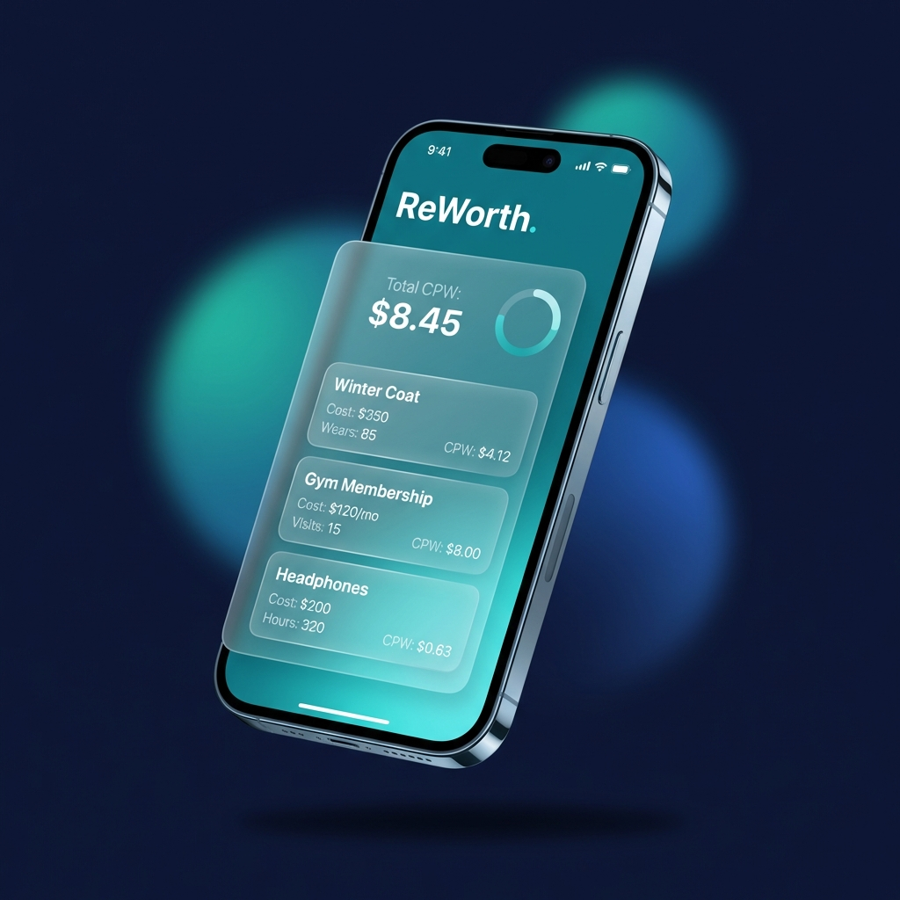
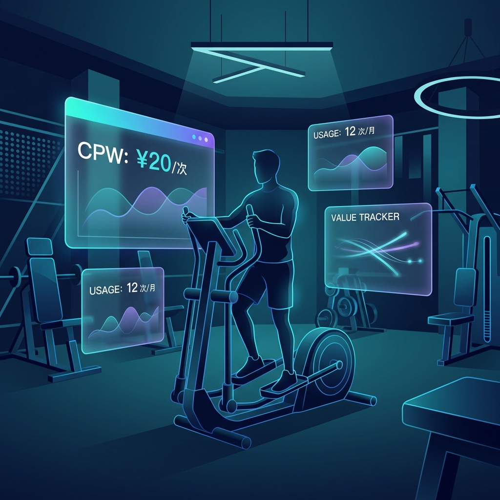
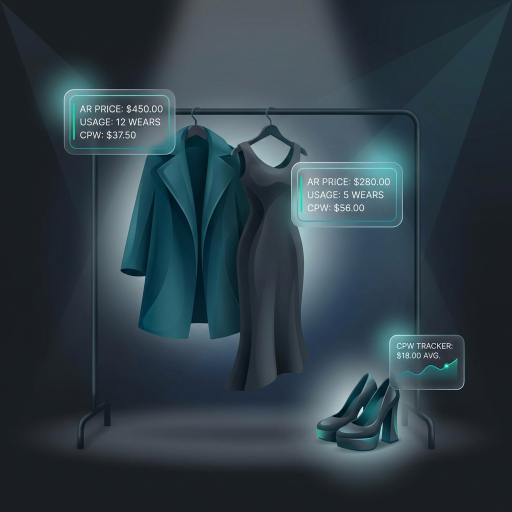

为什么我买的昂贵大衣
其实比快时尚更省钱？
一件5000元的经典大衣穿200次，CPW只要25元/次；而500元的快时尚外套穿10次就不想穿了，CPW高达50元/次。贵的便宜，便宜的贵，CPW用数据告诉你真相。
科学计算CPW（单次使用成本），用数据驱动你的消费决策。
从健身卡到奢侈品，从数码产品到日常穿搭，ReWorth帮你追踪每一次使用的真实价值。

这些消费难题，ReWorth都能帮你解答
一件5000元的经典大衣穿200次，CPW只要25元/次；而500元的快时尚外套穿10次就不想穿了，CPW高达50元/次。贵的便宜，便宜的贵，CPW用数据告诉你真相。
3000元的健身年卡，如果只去了15次，每次成本200元——比单次购买还贵！ReWorth帮你实时追踪使用频率，让健身投资不再打水漂。
不看价格标签，看使用价值。通过CPW公式（购买价格÷使用次数），ReWorth让你从"买得起"转变为"用得值"的消费思维。
一个简单而强大的公式，改变你的消费观
Cost Per Wear（单次使用成本）是评估消费价值的黄金标准。
这个公式适用于所有可重复使用的商品，帮助你从长期价值而非短期价格做决策。
"可持续消费的本质不是不消费，而是消费得更有价值。CPW思维让我们从追求'拥有'转向追求'使用'，这是消费主义时代最需要的理性工具。"
从日常穿搭到健身娱乐，ReWorth覆盖你的所有消费场景


关于CPW和ReWorth，你想知道的都在这里
CPW（Cost Per Wear）是指将商品的购买价格除以使用次数，得出的单次使用成本。这个指标能帮助你科学评估一件商品的真实价值。
例如：
虽然大衣价格更高，但因为使用次数多，单次成本反而更低，这就是CPW思维的核心价值。
使用ReWorth的CPW计算功能，分五步评估：
判断标准：如果实际CPW ≤ 单次购买价格（如30元/次），这张卡就是值得的。ReWorth会实时显示你的"回本进度"，让健身投资一目了然。
这是CPW思维的核心洞察：价格不等于成本，使用价值才是关键。
案例对比：
高质量大衣
购买价格：5000元 | 使用次数：200次 | CPW = 25元/次
快时尚大衣
购买价格：500元 | 使用次数：10次 | CPW = 50元/次
高质量商品虽然初始投入大，但因为耐用性好、款式经典，使用次数多，最终的单次成本反而更低。这就是"贵的便宜，便宜的贵"的数学证明。
参考研究：快时尚的环境成本
ReWorth适合所有可重复使用的消费品，主要包括四大类：
核心原则：任何你想知道"用够本没有"的东西，都可以用ReWorth追踪。不适合追踪的是一次性消费品（如食物、化妆品等）。
三步法：购买前预估 → 使用中追踪 → 定期复盘
1️⃣ 购买前预估
输入商品价格和预期使用次数，计算目标CPW。如果CPW在可接受范围内（如≤50元/次），再考虑购买。
2️⃣ 使用中追踪
每次使用后在App中记录，实时查看当前CPW。ReWorth会显示"回本进度"和使用趋势图，让你清楚知道这笔消费是否物有所值。
3️⃣ 定期复盘
每月或每季度查看各类消费的CPW数据，识别哪些消费物有所值（低CPW），哪些是冲动消费（高CPW）。用数据优化未来的消费决策。
💡 Pro Tip：设定个人CPW标准（如服装≤30元/次，数码≤10元/次），作为消费决策的参考基准。
CPW思维与可持续消费理念完美契合，体现在三个方面：
根据研究，快时尚行业是全球第二大污染源。通过CPW思维，我们从"买得多"转向"用得久"，这不仅省钱，更是对环境负责。
延伸阅读：过度消费的社会影响
是的，ReWorth完全免费！
核心功能包括：
ReWorth的使命是帮助每个人做出更理性的消费决策，所以我们坚持免费提供核心功能，让CPW思维惠及更多人。
三步开启你的CPW之旅：
💡 新手建议：先从3-5件高频使用的物品开始追踪，养成记录习惯后再逐步扩展。一个月后，你会惊讶于数据带来的洞察！